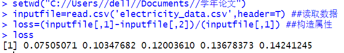

在数据挖掘的过程中，为了提取更有用的信息，挖掘更深层次的模式，提高挖掘结果的精度，我们需要利用已有的属性集构造出新的属性，并加入现有的属性集合中。
比如，进行防窃漏电诊断建模时，已有的属性包括供入电量、供出电量。理论上供入电量和供出电量应该是相等的，但是由于在传输过程中存在电能损耗，使得供入电量明显大于供出电量。反过来，为了判断是否有大量用户存在窃漏行为，可以构造一个新的指标—线损率，该过程即为构造属性。新构造的属性线损率按如下公式计算。
运行代码如下：

线损率的正常范围一般在3%-15%，如果远远超过该范围，就可以认为该条线路的大量用户很可能存在窃漏电等用电异常行为。根据计算结果，线损率最小为7.5%，最大为14.2%。由此可知，该条线路的用户并没有存在用电异常行为。